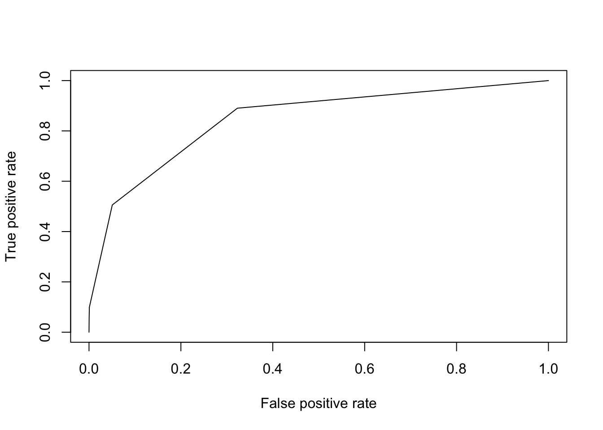
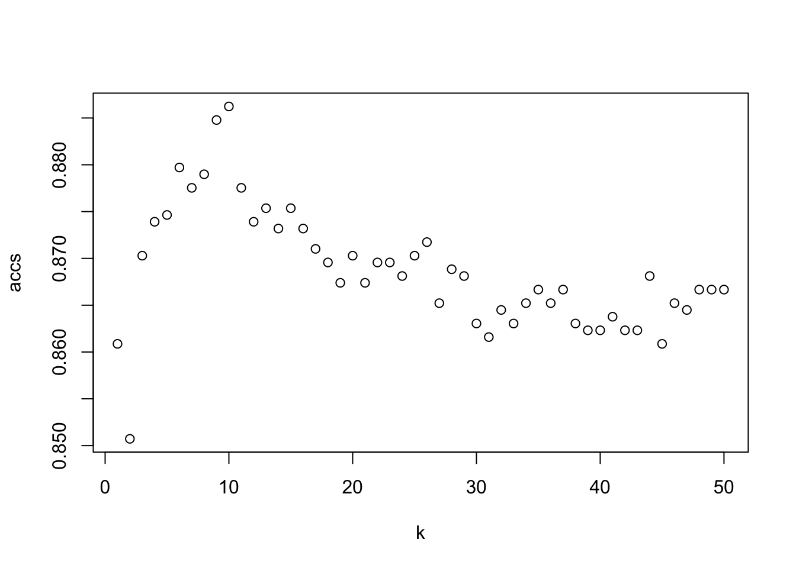
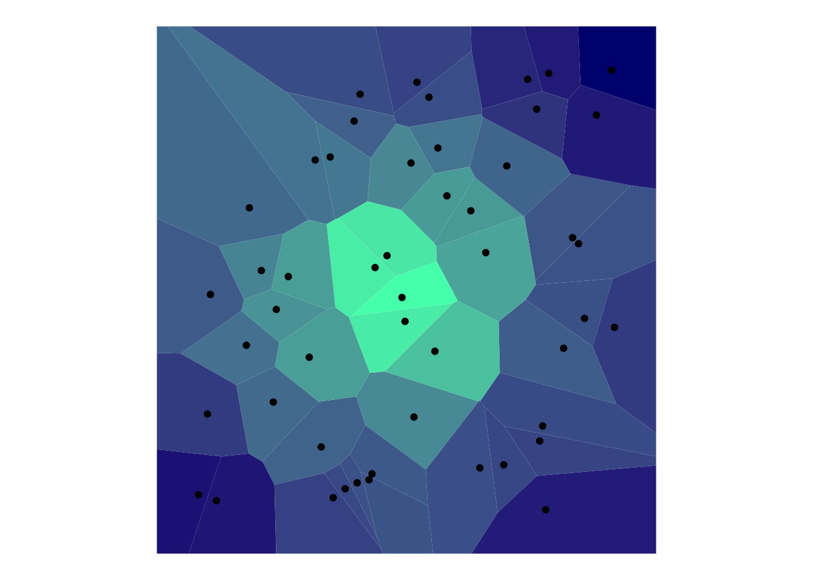

Data Analysis
1 Data Analysis Fundamentals
2 Cross Validation
# FROM: Dua, D. and Karra Taniskidou, E. (2017). UCI Machine Learning Repository [http://archive.ics.uci.edu/ml]. Irvine, CA: University of California, School of Information and Computer Science.
spamData = read.csv('spamData.csv')
names(spamData) <- c("make","address","all","3d","our","over","remove","internet","order","mail","receive","will","people","report","addresses","free","business","email","you","credit","your","font","000","money","hp","hpl","george","650","lab","labs","telnet","857","data","415","85","technology","1999","parts","pm","direct","cs","meeting","original","project","re","edu","table","conference",";:","(:","[:","!:","$:","#:","avg_cap_length","longest_cap_length","total_cap_length","spam_label")
n <- nrow(spamData)
shuffled <- spamData[sample(n),]
set.seed(1)
# Initialize the accs vector
accs <- rep(0,6)
for (i in 1:6) {
# These indices indicate the interval of the test set
indices <- (((i-1) * round((1/6)*nrow(shuffled))) + 1):((i*round((1/6) * nrow(shuffled))))
# Exclude them from the train set
train <- shuffled[-indices,]
# Include them in the test set
test <- shuffled[indices,]
# A model is learned using each training set
tree <- rpart(spam_label ~ ., train, method = "class")
# Make a prediction on the test set using tree
pred <- predict(tree, test, type = "class")
# Assign the confusion matrix to conf
conf <- table(test$spam_label, pred)
# Assign the accuracy of this model to the ith index in accs
accs[i] <- sum(diag(conf))/sum(conf)
}
print(accs)## [1] 0.9022164 0.9022164 0.9152542 0.8748370 0.8826597 0.8877285print(mean(accs))## [1] 0.894152# Print out the mean of accsBias and variance are main challenges of machine learning. bias are wrong assumptions. variance is due to sampling.
irriducilbe error: noise, shouldn’t be minimized. reducible error: bias and variance.
# Example of assigning levels to a predictor
#spam_classifier <- function(x){
# prediction <- rep(NA, length(x))
# prediction[x > 4] <- 1
# prediction[x <= 4] <- 0
# return(factor(prediction, levels = c("1", "0")))
#}3 Decision Tree
if (!require("rpart.plot")) install.packages("rpart.plot")
library(rpart.plot)
if (!require("RColorBrewer")) install.packages("RColorBrewer")
library(RColorBrewer)
if (!require("rattle")) install.packages("rattle")
library(rattle)
train_indices <- 1:round(0.7*n)
train <- shuffled[train_indices,]
test_indices <- (round(0.7*n)+1):n
test <- shuffled[test_indices, ]
tree <- rpart(spam_label ~ ., train, method = "class", parms = list(split = "information"))
pred <- predict(tree, test, type = "class")
conf = table(test$spam_label ,pred)
acc = sum(diag(conf))/sum(conf)
print(acc)## [1] 0.8818841print(conf)## pred
## 0 1
## 0 769 66
## 1 97 448fancyRpartPlot(tree)# normalize data on a 0-1 scale
# knn_train$Age <- (knn_train$Age - min_age) / (max_age - min_age)df <- read.table("./adultCensus.data", header = FALSE, sep = ",")
df_test <- read.table("./adultTest.test", header = FALSE, sep = ",", skip = 1)
names(df) <- c("age","workclass","fnlwgt","education", "education-num","maritalstatus","occupation","relationship","race","sex","capital-gain","capital-loss","hoursPerWeek","native-country","income")
names(df_test) <- c("age","workclass","fnlwgt","education", "education-num","maritalstatus","occupation","relationship","race","sex","capital-gain","capital-loss","hoursPerWeek","native-country","income")df[1,]df$fnlwgt <- NULL
tree <- rpart(income ~ ., df, method = "class", parms = list(split = "gini"))
all_probs = predict(tree, df_test, type = "prob")[,2]
all_probs %>% head()## 1 2 3 4 5 6
## 0.04987988 0.30019374 0.30019374 0.98084291 0.04987988 0.04987988fancyRpartPlot(tree)
3.1 ROC Curve
if (!require("ROCR")) install.packages("ROCR")
library(ROCR)
pred = prediction(all_probs, df_test$income)
perf = performance(pred, "tpr", "fpr")
plot(perf)
perf = performance(pred, "auc")
print(perf@y.values[[1]])## [1] 0.84511513.2 Comparing K-NN and Decision Tree Models
if (!require("class")) install.packages("class")
library(class)
train_indices <- 1:round(0.7*n)
train <- shuffled[train_indices,]
test_indices <- (round(0.7*n)+1):n
test <- shuffled[test_indices, ]
knn_train <- train
knn_test <- test
knn_train_labels <- knn_train$spam_label
knn_train$spam_label <- NULL
knn_test_labels <- knn_test$spam_label
knn_test$spam_label <- NULL
knn_train <- apply(knn_train, 2, function(x) (x - min(x))/(max(x)-min(x)))
knn_test <- apply(knn_test, 2, function(x) (x - min(x))/(max(x)-min(x)))
pred <- knn(train = knn_train, test = knn_test, cl = knn_train_labels, k = 5)
conf = table(knn_test_labels, pred)
print(conf)## pred
## knn_test_labels 0 1
## 0 757 78
## 1 94 451range <- 1:50
accs <- rep(0, length(range))
for (k in range){
pred <- knn(knn_train, knn_test, knn_train_labels, k=k)
conf <- table(knn_test_labels, pred)
accs[k] <- sum(diag(conf)) / sum(conf)
if (k %% 10 == 0){
print("10")
}
}## [1] "10"
## [1] "10"
## [1] "10"
## [1] "10"
## [1] "10"plot(range, accs, xlab = "k")
which.max(accs)## [1] 10train_indices <- 1:round(0.7*n)
train <- shuffled[train_indices,]
test_indices <- (round(0.7*n)+1):n
test <- shuffled[test_indices, ]set.seed(1)
knn_train <- train
knn_test <- test
knn_train_labels <- knn_train$spam_label
knn_train$spam_label <- NULL
knn_test_labels <- knn_test$spam_label
knn_test$spam_label <- NULL
#knn_train <- apply(knn_train, 2, function(x) (x - mean(x))/sd(x))
#knn_test <- apply(knn_test, 2, function(x) (x - mean(x))/sd(x))
knn_train <- scale(knn_train)
knn_test <- scale(knn_test)
pred <- knn(train = knn_train, test = knn_test, cl = knn_train_labels, k = 5)
conf = table(knn_test_labels, pred)
print(conf)## pred
## knn_test_labels 0 1
## 0 784 51
## 1 90 455range <- 1:50
accs <- rep(0, length(range))
for (k in range){
pred <- knn(knn_train, knn_test, knn_train_labels, k=k)
conf <- table(knn_test_labels, pred)
accs[k] <- sum(diag(conf)) / sum(conf)
if (k %% 10 == 0){
print("10")
}
}## [1] "10"
## [1] "10"
## [1] "10"
## [1] "10"
## [1] "10"plot(range, accs, xlab = "k")best = which.max(accs)pred <- knn(train = knn_train, test = knn_test, cl = knn_train_labels, k = best, prob = TRUE)
conf = table(knn_test_labels, pred)
acc = sum(diag(conf))/sum(conf)
print(conf)## pred
## knn_test_labels 0 1
## 0 780 55
## 1 91 454print(paste(acc, " knn accuracy"))## [1] "0.894202898550725 knn accuracy"probs_k <- attr(pred, "prob")
tree <- rpart(spam_label ~ ., train, method = "class")
probs_t <- predict(tree, test, type = "class")
conf = table(test$spam_label, probs_t)
acc = sum(diag(conf))/sum(conf)
print(conf)## probs_t
## 0 1
## 0 778 57
## 1 105 440print(paste(acc, " tree accuracy"))## [1] "0.882608695652174 tree accuracy"probs_t <- predict(tree, test, type = "prob")[,2]
pred_t = prediction(probs_t, test$spam_label)
pred_k <- prediction(probs_k, test$spam_label)
perf_t = performance(pred_t, "auc")
perf_k = performance(pred_k, "auc")
#ROC_curves(perf_t, perf_k)
print(perf_t@y.values[[1]])## [1] 0.886733print(perf_k@y.values[[1]])## [1] 0.43659953.3 Voronoi Diagram with ggvoronoi
if (!require("ggvoronoi")) install.packages("ggvoronoi")
library(ggvoronoi)
x <- sample(1:150,50)
y <- sample(1:150,50)
points <- data.frame(x, y, distance = sqrt((x-75)^2 + (y-75)^2))
ggplot(points) +
geom_voronoi(aes(x,y,fill=distance)) +
scale_fill_gradient(low="#4dffb8",high="navyblue",guide=F) +
geom_point(aes(x,y)) +
theme_void() +
coord_fixed()
4 Regression
Copyright © 2019 Tomas Leriche. All rights reserved.